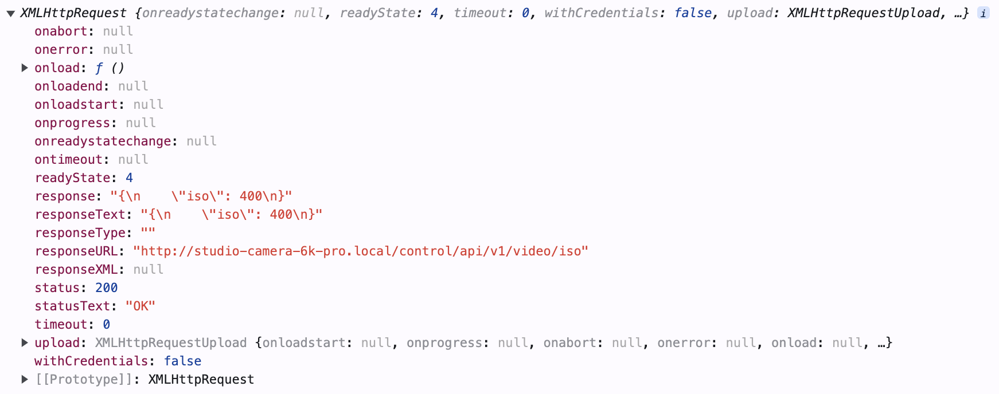

# 2. Programming and JSON Data
Now that we're communicating with the camera through the API in a web browser, let's step it up and use the API in a real programming language, like JavaScript or Python.
In this article, I'll use these two languages as they are the easiest to teach with, but making HTTP requests is possible in many languages, and there many ways to achieve the same result even in the same programming language.
I'll assume that you have a way of running your language of choice that works for you, but for now I'll use the JS console in Google Chrome, and `python` from the command line, either in interactive shell mode or as `.py` script files.
## JavaScript: XMLHttpRequest
> _You can read the documentation for the XMLHttpRequest JavaScript API [here](https://developer.mozilla.org/en-US/docs/Web/API/XMLHttpRequest)_
Making HTTP requests in JavaScript is easy, since it is a language designed for the web. We will instantiate a new `XMLHttpRequest` object, define its behavior, and then send the request to the API address:
```JavaScript
// Instantiate the XMLHttpRequest object
let xhr = new XMLHttpRequest();
// Define the behavior for when the response is loaded
// Here, I have set it to output the status and response body to the console
xhr.onload = function() {
console.log("Status: ", this.status, "\nResponse:", this.response)
};
// Open the connection
xhr.open("GET", "http://studio-camera-6k-pro.local/control/api/v1/video/iso");
// Send the request
xhr.send();
```
Running this in Chrome's developer console gives the following output:
```
Status: 200
Response: {
"iso": 400
}
```
When writing the anonymous function we pass to `xhr.onload`, we can use the `this` keyword to refer to the XMLHttpRequest object and its data. In my developer console, I can see
all of the available data that is part of the `xhr` instance of `XMLHttpRequest`:

Returned XMLHttpRequest Properties
That's all well and good, but we can only access the request response data inside of the anonymous function. XMLHttpRequests happen asynchronously,
meaning that the code won't have the response to the request right after we call `xhr.send()`. The function we pass to `xhr.onload` gets called when this response _is_ available,
so we must get the data from the response text and save it in some way for other parts of a program to use.
Our `xhr.onload` function should also have some kind of error handling, so here is a function that handles all of these steps plus a better `xhr.onload`:
```JS
function sendGETRequest(endpoint) {
// Put the camera's API address in a constant
const cameraAPIAddress = "http://studio-camera-6k-pro.local/control/api/v1"; // Remember to change this for YOUR camera's API address
// Instantiate the XMLHttpRequest object
let xhr = new XMLHttpRequest();
// Create an object to store and return the response
var responseObject;
// Define the onload function
xhr.onload = function() {
if (this.status < 300) { // If the operation is successful
responseObject = JSON.parse(this.responseText); // Give the data to the responseObject
responseObject.status = this.status; // Also pass along the status code for error handling
} else { // If there has been an error
responseObject = this; // Give the XMLHttpRequest data to the responseObject
console.error("Error ", this.status, ": ", this.statusText); // Log the error in the console
}
};
// Open the connection
// The "false" here specifies that we want to wait for the response to come back before returning from xhr.send()
xhr.open("GET", cameraAPIAddress+endpoint, false);
// Send the request
xhr.send();
// Return the data
return responseObject;
}
```
Now, if we load this function and run `sendGETRequest("/lens/iris")`, the function will return a JSON object with the iris data. If we give it an invalid endpoint or can't
connect to the camera for some reason, it will throw an error in the console. We can now use this function to fetch and store camera data. For example:
```JS
var cameraData = {}; // Make a JSON object to hold all of the data from the camera
cameraData.iris = sendGETRequest("/lens/iris"); // Set the 'iris' property to the data object we got from the camera
```
From here, it's easy to see how we can write code to fetch _all_ of the available data from the camera and store it in JSON objects. This will make it trivial to
store, display, recall, and eventually edit and `PUT` this data back to the camera.
## Python: Requests
> _You can read the documentation for the Requests Python library [here](https://requests.readthedocs.io/en/latest/)_
If you're using Python, making HTTP requests is easy using the _Requests_ library. When I tried, it was already preinstalled. If you don't have
it installed, you can do it easily with `pip`, the built in package manager for Python:
```shell
pip install requests
```
The same iris `GET` request I've been demonstrating with looks like this in Python:
```python
import requests
# Store the API Address
cameraAPIAddress = "http://Studio-Camera-6K-Pro.local/control/api/v1" # Remember to change this for YOUR camera's API address
# Send the request
response = requests.get(cameraAPIAddress+"/lens/iris")
# Print the response
print(response.text)
```
When we run this code, we can expect the same iris JSON data to be printed to the console. Like in JavaScript, we'll want a function that handles this parsing
and error handling for us. Here's what that might look like:
```python
import requests
def sendGETRequest(endpoint):
# Store the API Address
cameraAPIAddress = "http://Studio-Camera-6K-Pro.local/control/api/v1" # Remember to change this for YOUR camera's API address
# Send the request
response = requests.get(cameraAPIAddress+endpoint)
# Handle errors and return
if (response.status_code < 300):
return response.json()
else:
return response
```
This is very similar to how we handled the data in JavaScript. Note that Python doesn't have native JSON objects so they are parsed as `dict`s. In Python, `dict`s are
pairs of keys and values, defined with curly braces (`{}`) and accessed with brackets (`dict["key"]`). Like before, we can pass the return value of the function
along to an object that stores the camera data:
```python
cameraData = {} # Make a new dict called cameraData
cameraData["iris"] = sendGETRequest("/lens/iris") # Store the iris data in a key called "iris"
```
In the next article, we'll start sending commands _to_ the camera so that we can change settings!
## Aside: OpenAPI
The Blackmagic REST API is written with the OpenAPI specification in mind. The cameras host YAML documentation files for their API, and can be accessed at the following address:
```
http://<Hostname>/control/documentation.html
```
So for example, I can access the documentation at:
```
http://Studio-Camera-6K-Pro.local/control/documentation.html
```
You can feed these YAML files into various tools developed for OpenAPIs that can generate SDKs, documentation, tests, or GUIs programatically. This is an advanced
method, though, so I'll leave [this list of tools](https://openapi.tools/) for you to browse at your leisure.
>_To learn more about OpenAPIs, visit [openapis.org](https://www.openapis.org/)_